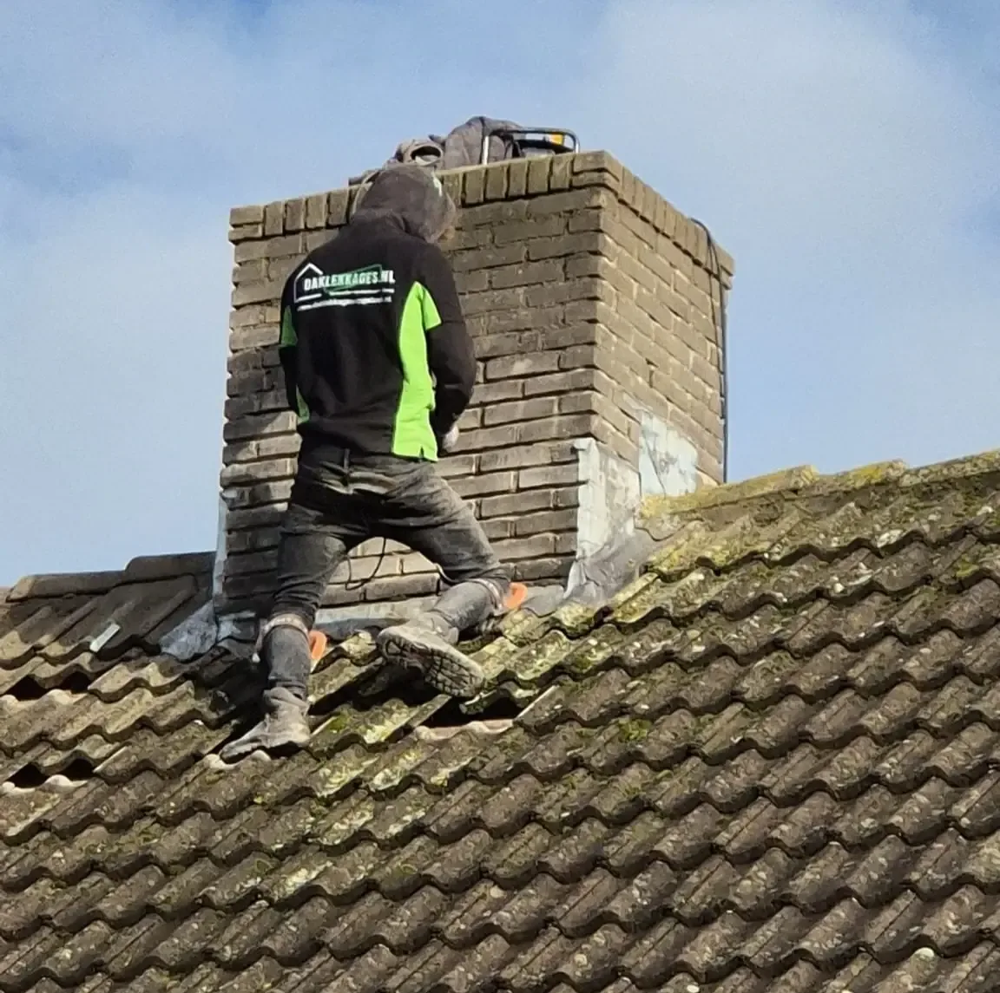
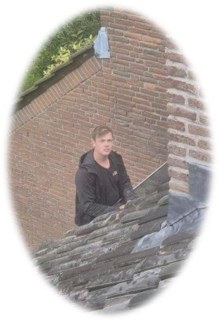

Schoorsteenrenovatie
All-in garantie op correct uitgevoerd renovatiewerk aan de schoorsteen.
10jaar
Een daklekkage vraagt om snelheid, maar vooral om vertrouwen. Daarom draait onze aanpak niet om mooie verkooppraat, maar om duidelijke communicatie, aantoonbaar uitgevoerd werk en oplossingen die technisch kloppen.
Bij Daklekkages Opgelost helpen we dagelijks mensen met lekkages, dakschade en onzekerheid over de staat van hun dak. Niet met onduidelijke offertes of verrassingen achteraf, maar met een aanpak waarin inzicht, eerlijkheid en vakmanschap centraal staan.
Juist omdat de dakdekkersbranche niet altijd het beste imago heeft, vinden wij het belangrijk om het anders te doen: transparanter, netter en betrouwbaarder. Van de eerste inspectie tot de uitvoering en oplevering moet voor u helder zijn wat er gebeurt, waarom dat nodig is en wat u kunt verwachten.
Goed werk begint volgens ons bij duidelijkheid, betrouwbaarheid en vakmanschap. Niet alleen op het dak, maar in het hele traject daaromheen.

Onze overtuiging: mensen willen niet alleen dat een lekkage wordt opgelost, maar ook dat ze zeker weten wat er gebeurt, waarom dat gebeurt en waar ze aan toe zijn.
Bij Daklekkages Opgelost werken we niet met onderaannemers en besteden we klussen niet uit aan andere partijen. Wie uw situatie beoordeelt en met u afstemt, werkt binnen hetzelfde team dat ook verantwoordelijk is voor de uitvoering.
Uw opdracht wordt niet doorgeschoven naar externe uitvoerders waar u vooraf niets van weet.
Werkzaamheden worden niet uit handen gegeven aan andere partijen buiten ons eigen team.
Dat zorgt voor kortere lijnen, heldere communicatie en minder ruimte voor verrassingen achteraf.
Wij werken landelijk, maar in de praktijk zijn we het meest actief in Gelderland, Noord-Brabant en Utrecht. Daardoor kunnen we daar vaak sneller schakelen voor inspectie, spoedherstel of een duidelijke eerste beoordeling. Tegelijk blijven we inzetbaar in heel Nederland, zonder voorrijkosten.
Snelle planning voor inspectie of spoedherstel
Duidelijke uitleg met kostenindicatie vooraf
Gerichte oplossing zodat het lek niet terugkomt
Landelijk inzetbaar: ook buiten deze drie provincies blijven wij actief door heel Nederland. De primaire regio’s zorgen vooral voor kortere lijnen en in veel gevallen snellere inzetbaarheid.
Goed om te weten: wij rekenen geen voorrijkosten. Zo blijft de eerste stap laagdrempelig, ook wanneer nog niet vaststaat welke werkzaamheden nodig zijn.
Wij geven garanties op werkzaamheden omdat wij achter onze uitvoering staan. Daarbij gaat het om duidelijke afspraken, schriftelijke vastlegging en kosteloos herstel wanneer een gebrek binnen de geldende garantie valt.
Afwijkende garanties worden altijd vooraf met u overlegd en schriftelijk vastgelegd. Zo blijft ook daarover alles helder.
Achter elk traject staat een team met een eigen rol en verantwoordelijkheid. Van planning en klantcontact tot specialistisch dakwerk: samen zorgen we voor een traject dat technisch klopt en prettig verloopt.
Stuurt de koers van het bedrijf aan en is inhoudelijk betrokken bij loodwerk, advies en specialistische beoordeling.
Is vaak het eerste aanspreekpunt en zorgt voor duidelijke afstemming rondom planning, contact en vervolg.

Werkt dagelijks aan uiteenlopende dakproblemen en draagt bij aan degelijk herstel en nette uitvoering op locatie.
Gespecialiseerd in werkzaamheden aan hellende daken en situaties waar aansluitingen en detailwerk het verschil maken.
Richt zich op platte daken, dakbedekking, aansluitingen en herstelwerk dat technisch duurzaam moet blijven.
Ondersteunt het team in de uitvoering en helpt processen op locatie en daarbuiten soepel te laten verlopen.
Ondersteunt op kantoor en helpt mee om administratie, structuur en interne organisatie soepel te laten verlopen.
Richt zich op loodwerk en detailaansluitingen waar nauwkeurigheid en vakkennis belangrijk zijn voor duurzaam herstel.
Of het nu gaat om een actieve lekkage, terugkerend vochtprobleem of twijfel over de staat van uw dak: wij kijken graag met u mee. U ontvangt een heldere beoordeling en een vrijblijvende offerte, zonder voorrijkosten.